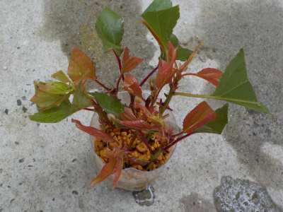
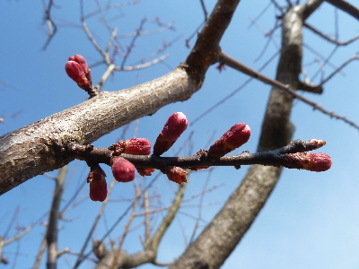
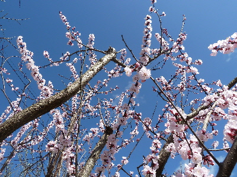
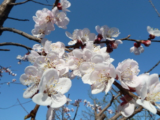
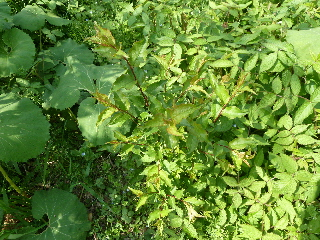
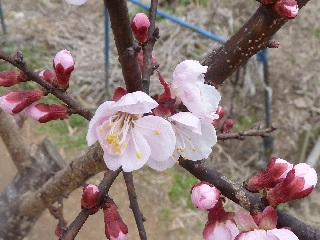
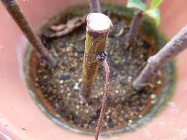
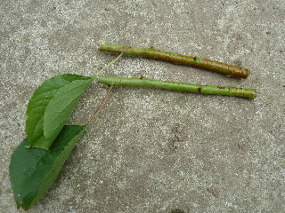

遊びで植物を育てよう
2019/06/23
ペットボトルで杏子の挿し木に挑戦。
基本挿し木するものではありませんが試してみました。

どうなるでしょうね。
【アンズTOP】
【果物TOP】
【園芸TOP】
2018/06/10
杏を収穫しました。
杏が色づいていたので収穫しました。

ちょっと青いのもありますね。
ちょっと熟れさせてからコンポートにして食べます。
【アンズTOP】
【果物TOP】
【園芸TOP】
2017/03/26
杏子の蕾がふくらんできました。
もうすぐ開花です。

来週は綺麗に咲いてるんだろうな。
【アンズTOP】
【果物TOP】
【園芸TOP】
2016/03/21
今年も杏子の花が咲きました。
毎年綺麗な花が咲いていいです。

杏子の木が家にあって良かったって思いました。
お勧めの果樹です。
【アンズTOP】
【果物TOP】
【園芸TOP】
2015/03/28
あんずの花は綺麗ですね。
綺麗です。

いいものが見れました。
果物の花って綺麗なものが多くていいですね。
【アンズTOP】
【果物TOP】
【園芸TOP】
2014/04/19
杏子に実が出来ていました。
ちょっと前に花が咲いたと思っていたんですが、もう実が出来ていました。

早いですね。
他の果樹よりとっても早い気がします。
【アンズTOP】
【果物TOP】
【園芸TOP】
2013/04/28
杏子の実生
ちょっと分かりにくいですが、アンズの実生苗です。

落ちた実から芽が出たものです。
こうやって伸びてくれると楽ちんですね。
【アンズTOP】
【果物TOP】
【園芸TOP】
2013/03/17
杏子の花が咲き出しました。
東京ではソメイヨシノが開花のようですが、私の家では杏子の花が開花です。

まだ少しですが、蕾もすぐに咲きそうです。
ピンク色が綺麗ですね。
【アンズTOP】
【果物TOP】
【園芸TOP】
2012/07/28
アンズは枯れましたね。
杏子の葉っぱが枯れてしまいました。

もうだめかな？
挿し木の部位が悪かったかも？
【アンズTOP】
【果物TOP】
【園芸TOP】
2012/07/08
杏子の挿し木も挑戦。
スモモの挿し木を挑戦しているんですが、
ついでに似たもののアンズもやってみます。

育つといいなー。
【アンズTOP】
【果物TOP】
【園芸TOP】
アンズはコンポートで食べます。
【おいしいものを食べよう。】【たくさん寝よう。】
【ソロ活をしよう!】【季節感のあることをしよう。】【動画視聴はほどほどに。】【当サイトの全てのコンテンツは無断転載禁止です。】